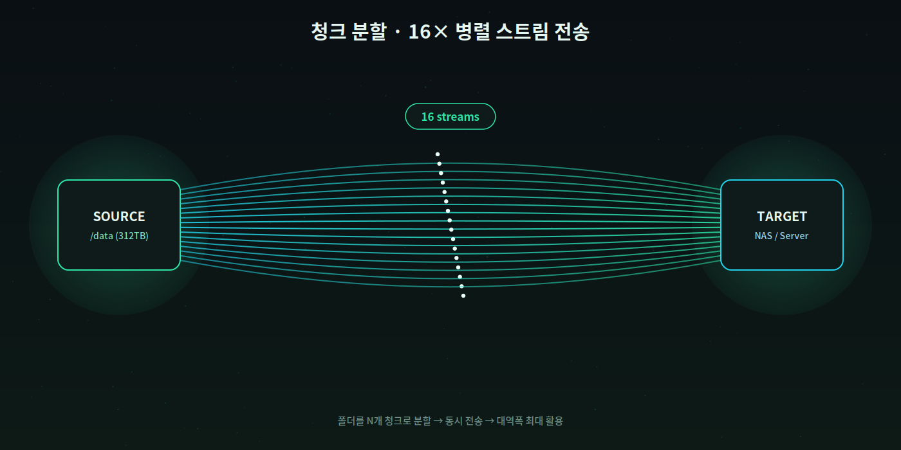
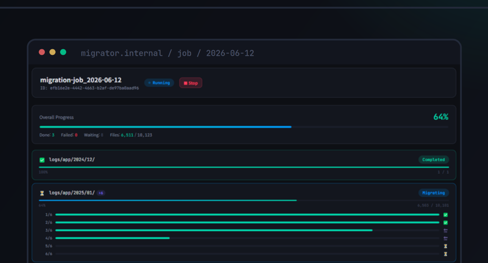
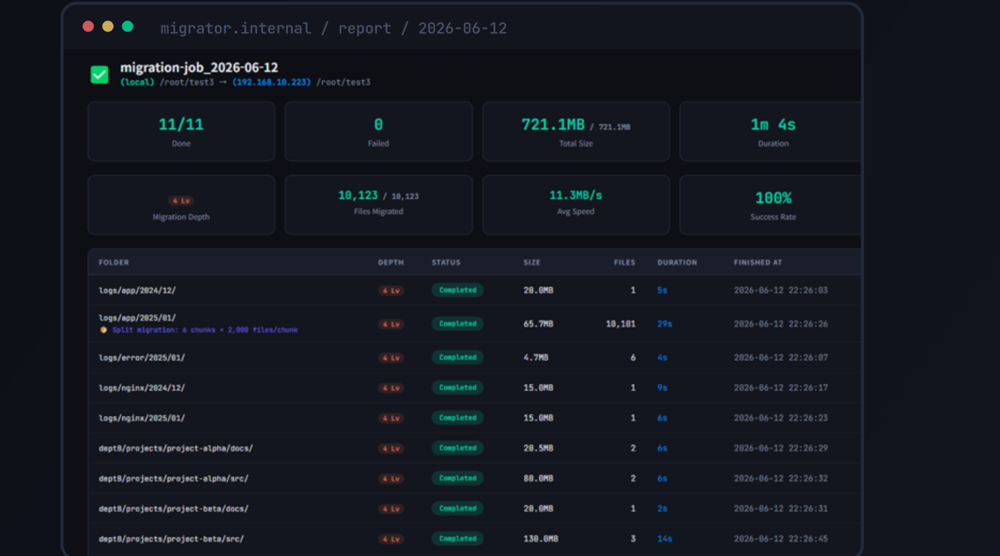

대용량 NAS를 옮긴다고 하면 보통 "주말 밤샘 작업", "서비스 점검 공지", "혹시 파일 하나라도 유실되면 어쩌나" 하는 걱정부터 떠오릅니다. 하지만 위 숫자는 실제로 가능한 수치입니다. 이 글에서는 이 정도 규모의 이관을 서비스 중단 없이 끝낼 수 있는 구조를 하나씩 뜯어봅니다.
왜 대용량 NAS 이관은 늘 두려운 작업일까
서버·NAS 이관을 앞두면 실무자들이 마주치는 문제는 대체로 비슷합니다.
- 다운타임 — 데이터를 다 옮길 때까지 서비스를 내려야 한다는 부담
- SSH 키·자격증명 노출 — 이관을 위해 프로덕션 서버에 새 접근 권한을 열어줘야 하는 위험
- 속도 — rsync를 그냥 돌리면 단일 스레드라 수십, 수백 TB급에서는 며칠씩 걸림
- 검증 부재 — "다 옮겼다"는 말을 무엇으로 확신할 것인가
이 중 하나라도 제대로 안 풀리면, 이관 작업 자체가 위험한 이벤트가 되어버립니다.
핵심은 "직접 연결하지 않는다"는 발상의 전환
대부분의 이관 방식은 소스 서버와 타깃 서버를 직접 연결합니다. SSH로 붙거나, 전용 에이전트를 양쪽에 설치하거나, 벤더 복제 솔루션을 씁니다. 문제는 이 방식이 프로덕션 서버에 직접적인 접점을 만든다는 점입니다.
Relay Gateway 방식은 이 접점 자체를 없앱니다. 소스와 타깃 서버가 서로를 몰라도 됩니다. 중간의 릴레이 게이트웨이가 소스에서 데이터를 끌어오고(pull), 타깃으로 밀어넣습니다(push). 서버 대 서버 직접 연결이 아예 존재하지 않는 구조입니다.
- 방화벽 친화적 — 서버당 포트 하나만 열면 되고, 소스-타깃 간 별도 규칙이 필요 없음
- 에어갭·보안 폐쇄망에서도 작동 — 직접 연결이 없으니 보안이 엄격한 환경에서도 구성 가능
- 자격증명 최소화 — Agent 모드를 쓰면 SSH 키·패스워드를 프로덕션 서버에 전혀 두지 않아도 됨
속도는 어떻게 확보하나 — 청크 병렬 전송
312TB를 1시간 남짓에 옮긴 비결은 두 가지 원리의 조합입니다.

첫째, 폴더 단위 청크 분할. 대용량 데이터를 하나의 스트림으로 옮기면 아무리 대역폭이 넉넉해도 병목이 생깁니다. 폴더 구조를 여러 청크로 쪼개서 최대 16개 스트림으로 동시에 전송하면, 이론상 대역폭을 거의 그대로 활용할 수 있습니다.
둘째, 히스토리 기반 델타 전송. 처음부터 전체를 한 번에 옮기는 게 아니라, 사전 스캔과 예비 전송을 여러 차례 거치며 변경분(델타)만 좁혀갑니다. 최종 컷오버 시점에는 실제로 옮겨야 할 변경분만 남기 때문에, 마지막 전환 작업은 짧게 끝납니다. 즉 "1시간 2분"은 312TB를 처음부터 다 옮긴 시간이 아니라, 사전 동기화를 마친 뒤 마지막 델타만 정리한 시간입니다.
여기에 대역폭 제어를 더하면, 이관 작업이 운영 트래픽을 잡아먹지 않도록 상한선을 걸 수 있습니다. 업무 시간에도 서비스 영향 없이 백그라운드로 동기화를 진행할 수 있는 이유입니다.
진행 상황은 폴더 단위로 실시간 모니터링됩니다. 전체 진행률뿐 아니라 개별 폴더가 몇 개의 청크로 쪼개져 어느 시점까지 처리됐는지 실시간으로 확인할 수 있어서, 지금 어디까지 됐는지 알기 위해 로그를 뒤질 필요가 없습니다.

"다 옮겼다"를 어떻게 증명하나
이관에서 가장 위험한 순간은 마지막 컷오버 결정입니다. "옮겼으니 이제 트래픽을 새 서버로 돌리자"는 판단을 무엇을 근거로 내릴 것인가. 마이그레이션이 끝나는 즉시 소스와 타깃의 모든 파일에 대해 체크섬(MD5) 비교가 자동으로 실행됩니다.
- 완료 폴더 48 / 48
- 실패 0건
- 파일 누락 0건
- 체크섬 불일치 0건

이 결과가 곧 컷오버 여부를 결정하는 근거가 됩니다. "느낌상 다 옮긴 것 같다"가 아니라, 검증된 숫자를 보고 전환 버튼을 누르는 것과 감으로 누르는 것은 완전히 다른 이야기입니다. 이 리포트는 단일 HTML 파일로 자동 생성되기 때문에, 별도 문서 작업 없이 그대로 내부 보고나 감사 자료로 제출할 수 있습니다.
재검증도 처음부터 다시 하지 않습니다.
마이그레이션 후 "혹시 몰라서 한 번 더 확인해보자"는 요청은 흔한데, 843만 개 파일을 처음부터 다시 스캔하면 그것만으로도 상당한 시간이 걸립니다. 이전 실행에서 계산한 체크섬을 인덱스로 저장해두면, 재검증 시에는 변경된 부분만 다시 계산하면 되기 때문에 거의 즉시 결과를 받을 수 있습니다. 정기 동기화·DR replication처럼 반복적으로 이관·검증을 진행해야 하는 환경에서는 이 차이가 누적되며 체감이 커집니다.
정리
312TB, 843만 개 파일, 1시간 2분, 무결성 100% — 이 숫자가 가능했던 이유를 정리하면 다음과 같습니다.
- Relay Gateway 구조로 소스-타깃 직접 연결 없이, 방화벽·보안 환경에 상관없이 이관
- 청크 병렬 전송 + 히스토리 기반 델타 동기화로 최종 컷오버 시간을 최소화
- 체크섬 자동 검증으로 "다 옮겼다"를 감이 아니라 숫자로 증명
- 인덱스 기반 재검증으로 반복 확인 작업의 부담을 줄임
대용량 이관이 두려운 이유는 대체로 확신할 수 없어서입니다. 속도와 검증, 두 가지가 같이 해결되면 이관은 더 이상 밤샘 이벤트가 아니라 예측 가능한 작업이 됩니다.
이 글의 수치는 실제 마이그레이션 환경을 기반으로 한 예시 시나리오입니다. 환경에 따라 실제 소요 시간과 처리량은 달라질 수 있습니다.
직접 확인해보고 싶다면?
신용카드 없이 7일 무료로 체험해보세요.